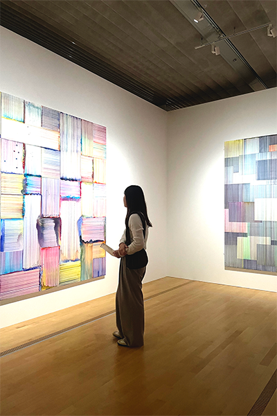
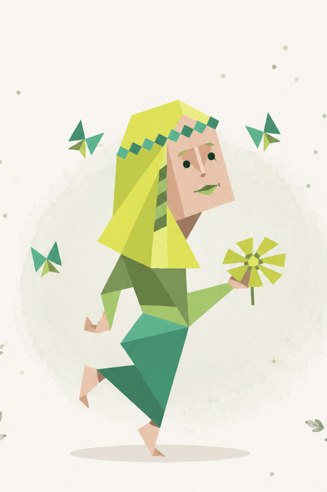

PROFILE
2000年生まれ。静岡県三島市出身。
2026年Webデザインを学習。
HTML・CSS・Photoshop・Illustratorを中心に勉強しました。
SEOを意識した構造設計や
保守しやすいコーディングを意識しています。
JOURNEY
2026 2月 Webデザイン学習開始
2026 6月 ポートフォリオ制作
2000年生まれ。静岡県三島市出身。
2026年Webデザインを学習。
HTML・CSS・Photoshop・Illustratorを中心に勉強しました。
SEOを意識した構造設計や
保守しやすいコーディングを意識しています。
2026 2月 Webデザイン学習開始
2026 6月 ポートフォリオ制作

旅行 / 美術館巡り / 自然の中で過ごすこと
旅行先で新しい文化や価値観に触れることが好きで、多様な視点や発想に出会うことを楽しんでいます。綺麗な空を見ると幸せを感じます。
和を以て尊しと為す（わをもってとうとしとなす）
相手を思いやる気持ちや協調性を大切にしながら、
人とのつながりを大事にしていきたいと考えています。
ドラえもん / Nikon Zfc / 愛犬（しるく）
休日はカメラを持って出かけ、 好きな景色や思い出を写真に残しています。
性格診断：INFP（仲介者）
好奇心が強く、新しいことを学ぶのが好きです。 一方で、細かな部分までこだわりながら 丁寧に制作を進めることを大切にしています。
